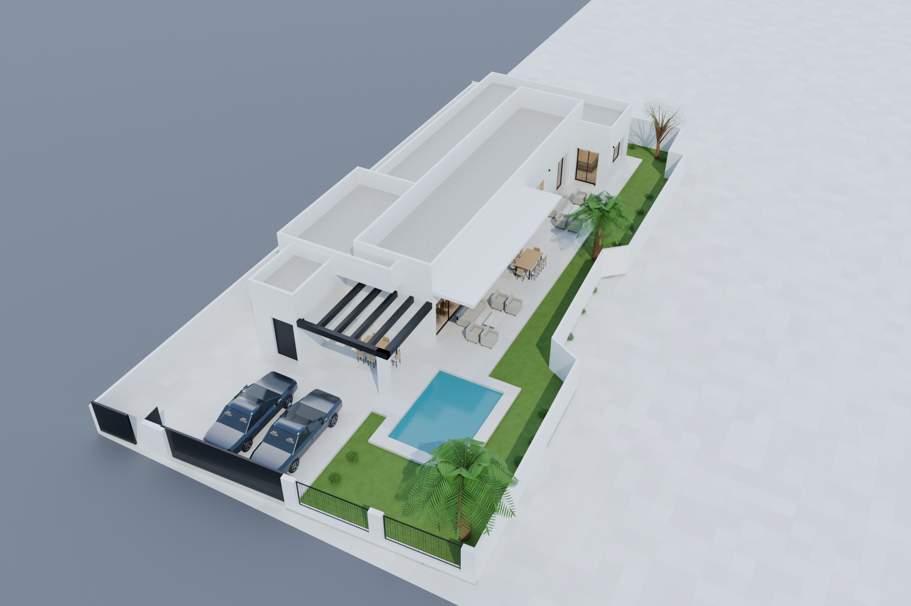
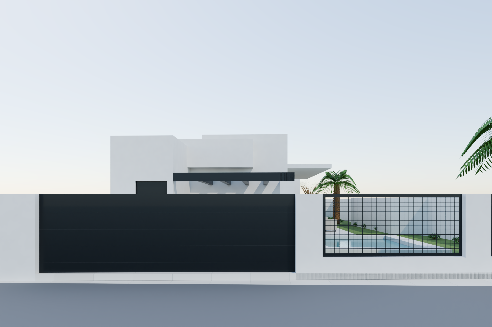
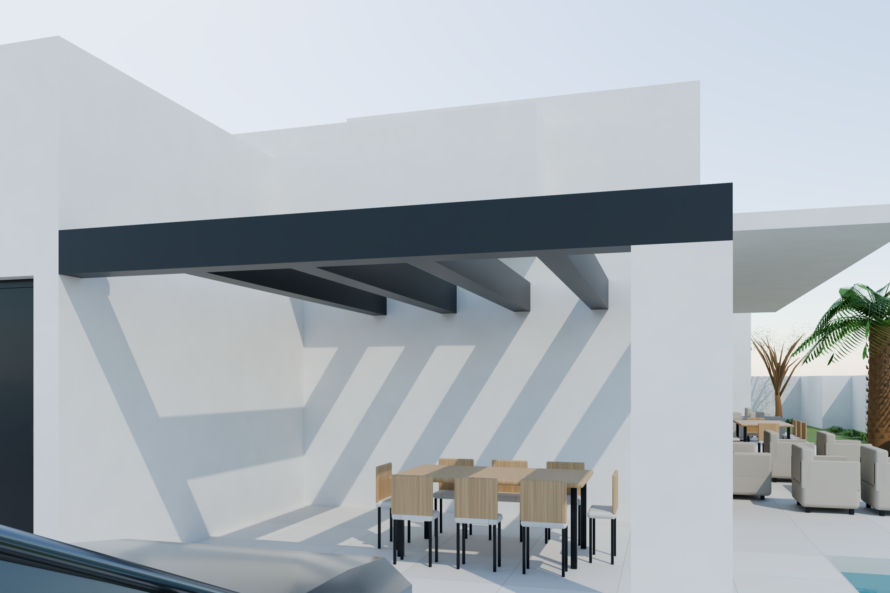
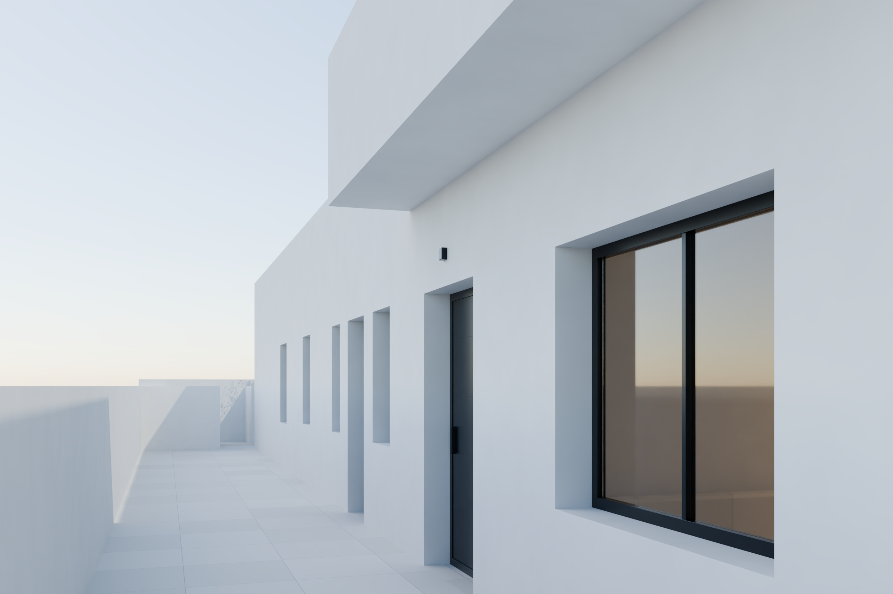
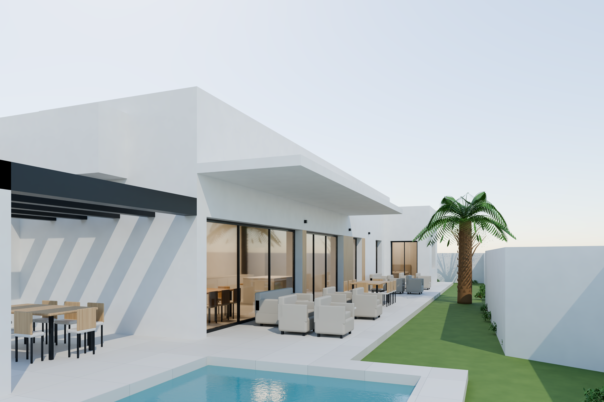
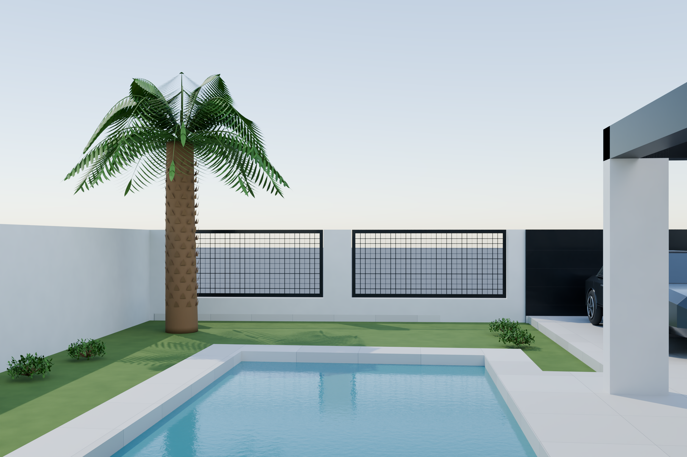
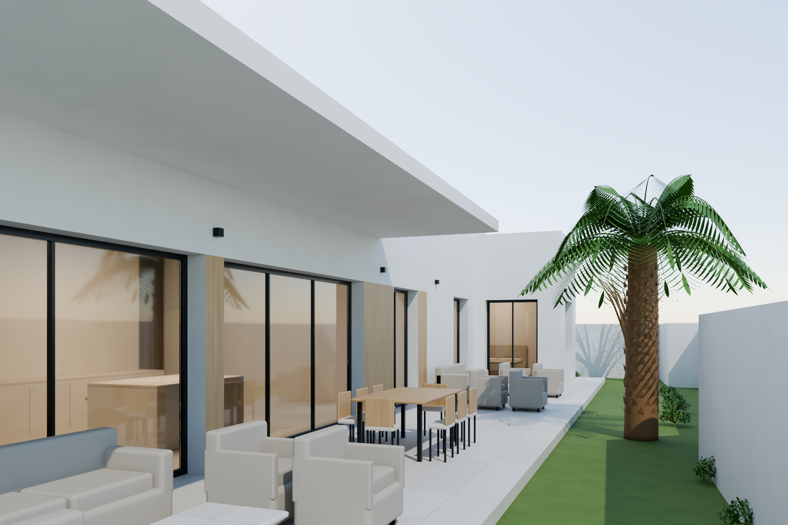
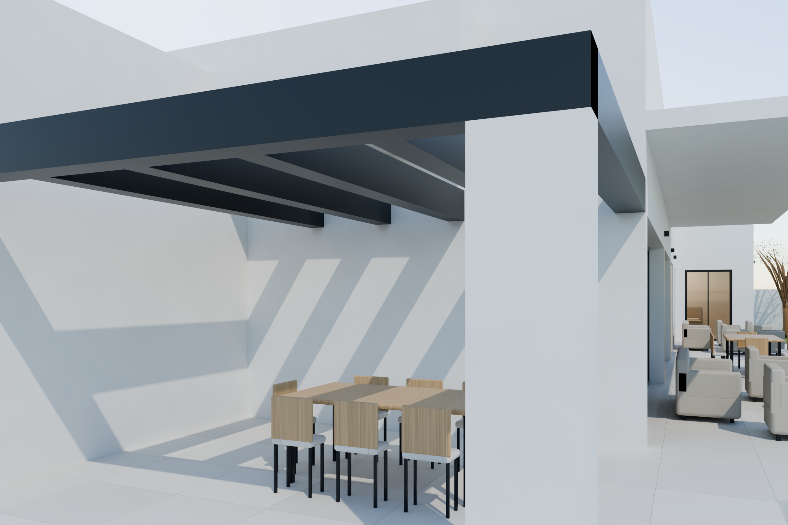
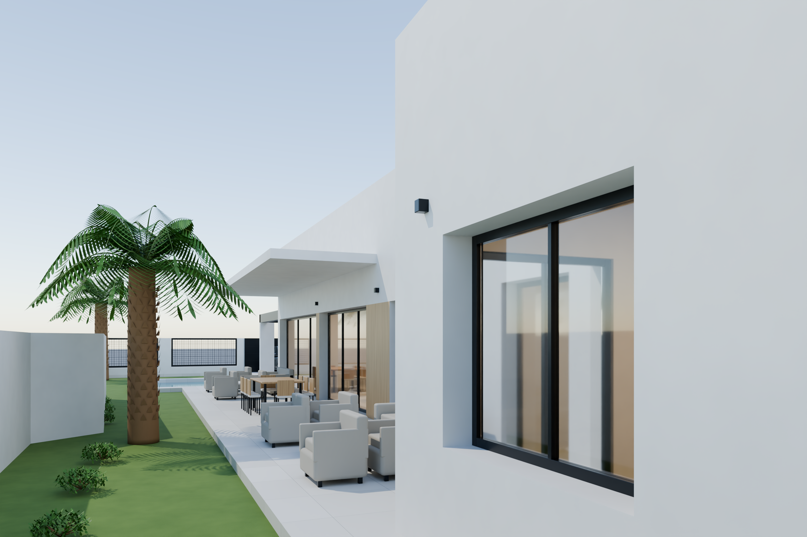
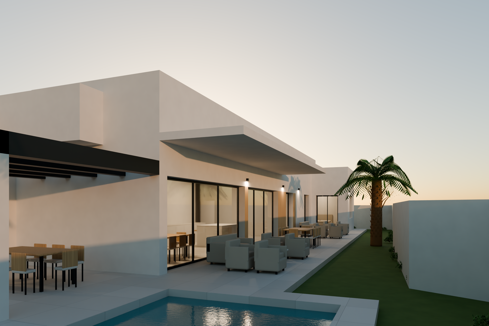

01 · Vista aérea oblicua de la parcela · 35 mm · 2500 × 1667 px

02 · Vista desde el vial público · 30 mm · 2500 × 1667 px

03 · Vista desde el aparcamiento · 30 mm · 2500 × 1667 px

04 · Entrada principal · 35 mm · 2500 × 1667 px

05 · Piscina hacia vivienda · 28 mm · 2500 × 1667 px

06 · Terraza hacia piscina · 35 mm · 2500 × 1667 px

07 · Fachada de salón, cocina y terraza · 30 mm · 2500 × 1667 px

08 · Porche y comedor exterior · 30 mm · 2500 × 1667 px

09 · Esquina del jardín · 28 mm · 2500 × 1667 px

10 · Vista al atardecer · 28 mm · 2500 × 1667 px